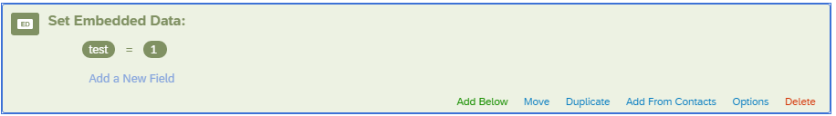
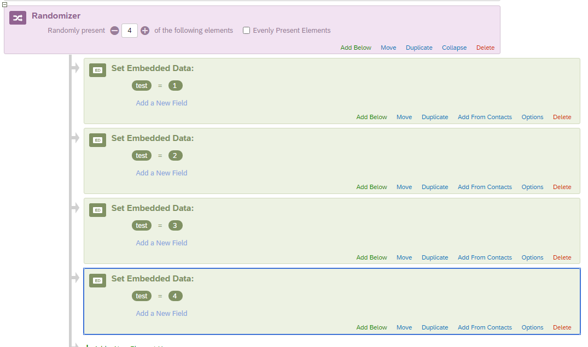
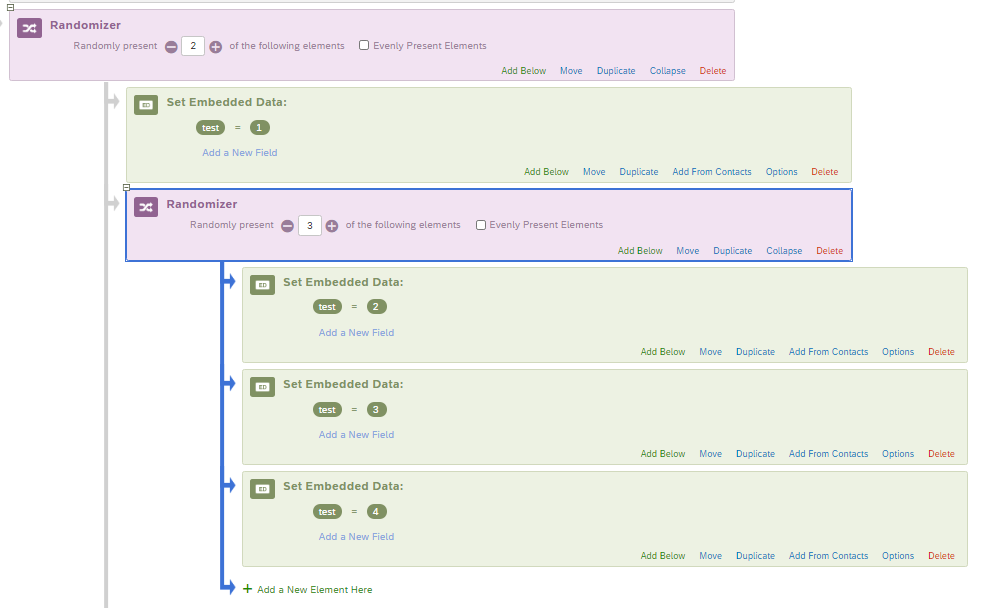
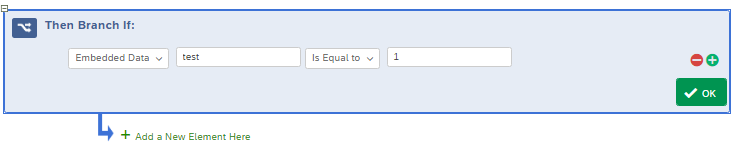
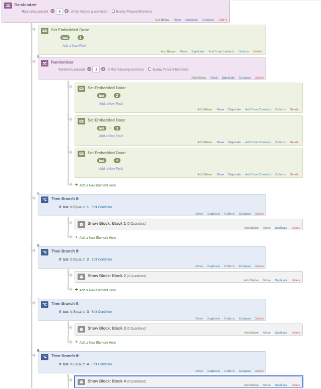

How to Do Unequal Randomization in Qualtrics Surveys
Recently, some coauthors and I were working on a survey experiment in Qualtrics where we were assigning people into 4 different groups. This is something that Qualtrics can do really easily with its in-built randomizer function. If you use this, and keep evenly present elements on, your respondents will be sorted in roughly evenly. So if you have 16 respondents and 4 groups, on average you’ll get 4 people per group.
But we had a different situation. We had four groups but we didn’t want it split evenly. We wanted it so that group 1 was half of the survey, and groups 2, 3, and 4 took up thirds of the remaining half.
Unfortunately, Qualtrics doesn’t seem to have an option that let’s you select unequal probabilities natively. If you deselect “evenly present elements” it’ll just randomize without any real concern towards whether your groups end up looking roughly equal. But that’s not what we needed. So I wanted to write about our solution to this so, hopefully, others in a similar situation might be able to find a work-around that works for them, too!
Our solution used embedded data, then branches, and the standard randomizer. I’ll also talk about how you might be able to generalize this to any number of conditions (although some are more work than others).
Starting with Embedded Data
As you probably know: After you’re done with your Qualtrics survey, you can export it as a csv or as a xlsx file. In addition to the answers to your questions, it’ll also include some project and respondent metadata. But you can also program the survey for it to include you’re own custom metadata to be embedded in the project. You can do this by clicking on the “add new element here” button and adding embedded data to the project.
Once you’ve done that, you can customize your field to have whatever name you want. You can also set the value for this field. Here I set a variable named “test” equal to the value “1”. When I export the results for this survey, there will be a new column called “test” where the value for every respondent will be 1.
 Importantly, though, you can also set multiple conditions for the embedded data field! You do this by clicking “add below” and adding more embedded data sections.

Pop quiz! What would you get in the “test” column if you ran this survey as is?
You’d get 4 because, right now, you’re telling Qualtrics:
- Invent a column called test. Set it equal to 1.
- Actually, remember test? Set it to 2.
- I lied. Make it 3 now.
- Jk. 4.
Here’s where we start using the randomizer.
“OMG so random…”
As it stands now, you’re going to end up with a field called test where the value is set to 3 for all respondents. Instead of that, we can use the randomizer to make it so that 1/4 of the sample has a value of 1 for test, 1/4 has a value of 2, 1/4 has a value of 3, and 1/4 has a value of 4.
 You may be thinking “Cool. But this doesn’t do anything for me. I’m right back at equal probabilities for my experimental conditions.” And you’d be right if we were stopping here.
But we’re not stopping here.
We’re going to nest randomization conditions.

This programming is pretty similiar to what we ended up using. Let’s follow the logic of the flow:
- Randomly pick either the test 1 condition with 50 % probability.
- If it is not picked, then randomly select one of the remaining 3 conditions with 1/3 probability each.
This will mean that half of the respondents will get test1 and 1/6th will go to each test2, test3, and test4. Which is what the situation is in the second image and exactly what we were looking for in the real-life scenario.
This nesting is the key thing here. By nesting your randomizers strategically, there are few combinations that you won’t be able to achieve. This sort of set up can be really useful if you’re doing a multifactorial survey experiment.
We can wrap this all up with a neat bow through some branching.
Branch it out
Now we can do some branches so that our participants only see the blocks that they’re intended to see. Then branches work off of boolean logic. If a condition is TRUE then it’ll run a particular course of action. If it’s FALSE then it won’t run that action. In Qualtrics, you can set the branching logic so that it reflects the metadata that was assigned to participants through the randomizer.
 After that, you can add the block that you wanted people with test condition 1 (and only test condition 1) to see. And if you repeat it out, then you can complete the whole survey flow. Here’s basically what our survey looked like once the logic is completed all the way to the end.

One of the things I really like about this approach (rather than, say, using a random number generator and a bunch of then branches) is that this makes your later analysis pretty easy. If you’re making pivot tables, you can group off of that variable’s value. If you’re doing ANOVA in SPSS, Stata, or R, you’ve got a single variable already to go without having to do any post-hoc coding. It also makes it easier to set dummy variables if you do a more advanced regression analysis. I’m personally a big fan of doing small-to-moderate amounts of work up-front to save myself larger amounts of work down the road. I’m a big believer that work borrowed from your future self compounds with interest.